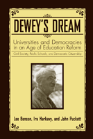

Realizing Dewey's vision of making public schools the seedbed of a democratic society
Realizing Dewey's vision of making public schools the seedbed of a democratic society


 Realizing Dewey's vision of making public schools the seedbed of a democratic society
Realizing Dewey's vision of making public schools the seedbed of a democratic society

|  |
Dewey's DreamUniversities and Democracies in an Age of Education ReformLee Benson, Ira Harkavy and John Puckettpaper EAN: 978-1-59213-592-9 (ISBN: 1592135927) |
"For 20 years, the University of Pennsylvania has been a model for how an urban university can engage creatively with its surrounding community. In this thoughtful book, architects of this program describe its philosophical roots and explain how a bold, imaginative effort can invigorate democracy and civic life in ways that enrich the lives of students and neighborhood residents alike."
—Derek Bok, Interim President, Harvard University
This timely, persuasive, and hopeful book reexamines John Dewey's idea of schools, specifically community schools, as the best places to grow a democratic society that is based on racial, social, and economic justice. The authors assert that American colleges and universities bear a responsibility for—and would benefit substantially from—working with schools to develop democratic schools and communities.
Dewey's Dream opens with a reappraisal of Dewey's philosophy and an argument for its continued relevance today. The authors-all well-known in education circles-use illustrations from over 20 years of experience working with public schools in the University of Pennsylvania's local ecological community of West Philadelphia, to demonstrate how their ideas can be put into action. By emphasizing problem-solving as the foundation of education, their work has awakened university students to their social responsibilities. And while the project is still young, it demonstrates that Dewey's "Utopian ends" of creating optimally participatory democratic societies can lead to practical, constructive school, higher education and community change, development, and improvement.
Excerpt available at www.temple.edu/tempress
"Lee Benson, the noted historian; Ira Harkavy, a renowned urban leader; and John Puckett, who has written incisively about education, have produced an immensely valuable book exploring how community schools can strengthen the bonds between a society founded on the principles of justice and its equally deep commitment to participatory democracy. Their volume is a welcome, indeed necessary, addition to our ongoing national conversation about how education and schooling will evolve in the years to come.."
—Vartan Gregorian, President, Carnegie Corporation of New York
"Dewey's Dream is a superb book. It brings alive the powerful legacy of John Dewey's Chicago years. With colleagues like Jane Addams and William Rainey Harper, he crafted a philosophical foundation for participatory democracy and for powerful partnerships between schools and neighborhoods, and between universities and communities. Dewey's Dream is a must-read for all who seek a firm conceptual and historical foundation for democratic educational reform at all levels"
—Lee S. Shulman, President, The Carnegie Foundation for the Advancement of Teaching
"One of the most startlingly impressive aspects of the � text is that the authors have recast Dewey's work by a close reading and re-analysis of his legacy. In so doing, they have re-energized the progressive intent in his original work and provided a contemporary focus for a renewal of the progressive agenda in education. I found the argument compelling and exciting and, in my view, the authors have fully succeeded in identifying key tasks for a role for education in promoting participatory democracy."
—Henry Louis Taylor, Jr., Director of the Center for Urban Studies, The State University of New York at Buffalo
"A breath of fresh air! A manifesto that shows how to do as well as how to think by scholars not afraid to put their hearts and minds
together to make things happen. The book makes Dewey's dream of
building democracy from the ground up a real project rather than a
historically interesting idea."
—Gar Alperovitz, Lionel R. Bauman Professor of Political Economy, University of Maryland, College Park
"Dewey�s Dream�s strength is its contribution to a re-visioning of higher education�s democratic commitments�.Perhaps the most important lesson from [Dewey�s Dream] is that it is the generation of new knowledge that fundamentally demands engagement in the 21st century�.This is Dewey�s dream fulfilled."
—The Michigan Journal of Community Service Learning
"Dewey�s Dream is both a tribute to the philosopher and a critical assessment of his work�For any university educator or administrator interested in facilitating collaborative community problem-solving projects part 2 should be required reading for its presentation of concrete strategies�.[T]his book could serve as a short, focused (albeit biased) introduction to [Dewey�s] philosophy of education, and it would certainly provoke in-class debates about the extent to which Dewey�s influence can still be found in public school classrooms today."
—H-Net
"Dewey�s Dreamis intellectually refreshing, provocative, persuasive, jargon free and downright practical. The authors organized the text to model for readers how to intertwine theory and practice to reveal ways that schools can promote participatory democracy. And John Dewey would be proud."
—The Journal of Educational Research
"Dewey�s Dream is, they disarmingly say, a manifesto, aiming to be �agenda-setting and movement-initiating, not thesis-proving,� and draws on the wealth of practical experience building community school partnerships at the University of Pennsylvania�.The second part [of the book] is a fascinating discussion of a particular model for this [community school] movement, concentrating on the West Philadelphia community schools project, of which these authors are legitimately proud. There are particularly interesting brief discussions of the way university and school teaching, research, and community engagement can complement one another in programs on nutrition and health care."
—Perspectives on Politics
"Dewey�s Dreamhas great merit. It provides an engagingly written overview of the educational philosophy and action of John Dewey...It also places the current movement of academic civic engagement...into proper historical and intellectual perspective.... It should be read by all those interested in the role of higher education in modern society � and by those who should be."
—Education, Citizenship, and Social Justice
"[A] thoughtful and engaging collaborative manifesto...which [seeks] to bring Dewey's thought to bear on the current problems facing the academy and the good society."
—The Good Society
"Lee Benson, Ira Harkavy, and John Puckett have provided us with a provocative discussion of a significant issue.... One likely benefit of Dewey's Dream will be that more people will come to realize the need to challenge the unquestioned assumption that Dewey's views are unassailable.... For no reason other than the challenges that are leveled against Dewey's views, Dewey's Dream should be read by university reformers, educational philosophers, and teacher educators."
—The History of Education Quarterly
Also available in e-book
Preface
Introduction: Dewey's Lifelong Crusade for Participatory Democracy
Chapter One Michigan Beginnings, 1884-1888
1. 1. Dewey's First Attempt to Combine Theory and Practice
Chapter Two Dewey at Chicago, 1894-1904
2.1. President Harper and Chicago's Department of Pedagogy
2.2. Plato's �Republic� and Dewey's �Philosophy of Education�
2.3. Participatory Democratic Societies and Participatory Democratic Schooling Systems
2.4. Dewey's Laboratory School
2.5. Wilhelm Wundt's Psychological Laboratory and Dewey's Scientistic Laboratory School
2.6. Jane Addams, Hull House, and Dewey's Prophetic Essay, �The School as Social Centre�
2.7. The Schooling System as the Strategic Subsystem of Modern Societies
Chapter Three Dewey Leaves Chicago for Columbia
3.1. Dewey Abandons Any Attempt To Integrate Schooling Theory and Schooling Practice
3.2. Dewey vs. Lippmann: Participatory Democracy and Face-to Face
Neighborly Communities
3.3. Democratic Theory and the Construction of Democratic Cosmopolitan
Neighborly Communities
Chapter Four Elsie Clapp's Contributions To Community Schools
4.1. Maurice Seay and Community Schools
4.2. The Rise and Decline of the Community School Movement After 1945
Chapter Five Penn and the Third Revolution In American Higher Education
5.1. Increasing Penn's Engagement With Local Public Schools As a
Practical Example of Democratic Devolution Revolution
5.2. An Innovative Strategy To Achieve A Democratic Devolution Revolution
5.3. Penn and West Philadelphia Public Schools: Learning By Reflective Doing
Chapter Six The Center for Community Partnerships
6.1. Changing Penn's Undergraduate Curriculum To Help Change
West Philadelphia Public Schools
6.2. Community Healthcare As A Complex Strategic Problem To �Do Good�
And Help Bring About �One University�
6.3. Democratic Partnerships and Communal Participatory Action Research
6.4. President Rodin's Inspiring Vision of Penn and West Philadelphia
As Constituting A �Beloved Community�
6.5. President Gutmann Proclaims a �Penn Compact� To �Serve Humanity And Society�
Chapter Seven The University Civic Responsibility Idea Becomes An International Movement
7.1. An International Academic Consortium for the Advancement of Democracy
Chapter Eight John Dewey, the Coalition for Community Schools, and Developing a Participatory Democratic American Society
Notes
Acknowledgements
The late Lee Benson was Emeritus Professor of History at The University of Pennsylvania.
Ira Harkavy is Associate Vice President and Director of the Center for Community Partnerships, University of Pennsylvania.
 | John Puckett is Associate Professor in the Policy, Management, and Evaluation Division of the University of Pennsylvania Graduate School of Education. He is the co-author of Leonard Covello and the Making of Benjamin Franklin High School: Education as if Citizenship Mattered (Temple). |
Education
Political Science and Public Policy
© 2015 Temple University. All Rights Reserved. This page: http://www.temple.edu/tempress/titles/1892_reg.html.